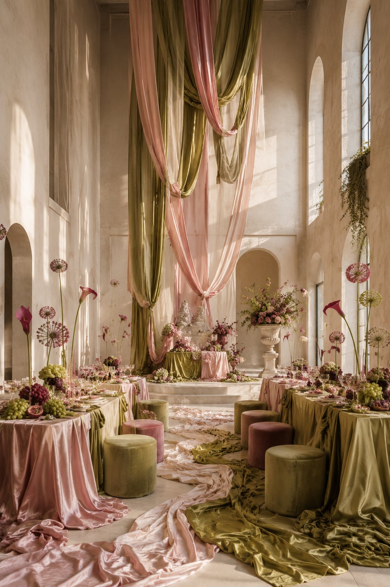
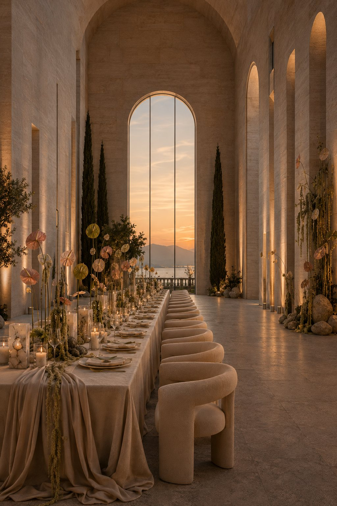
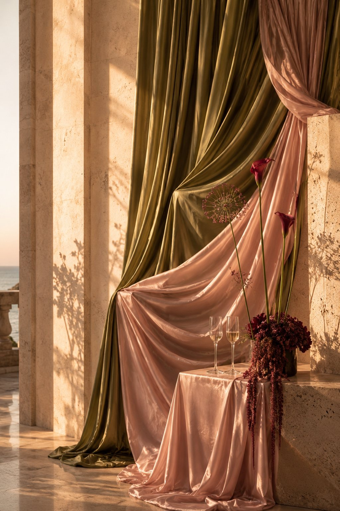

No. 05 - Silk, Stone and Soft Colour
A soft architectural study shaped through blush silk, olive drapery and warm stone. The world is quieter than spectacle: fabric, shadow and floral detail held in one atmospheric language.
Inquire - atelier@liaarmonia.com

